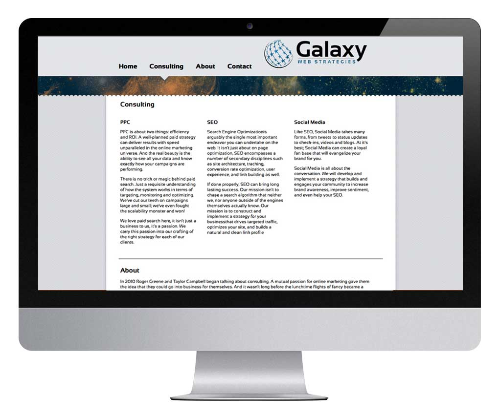

{Galaxy Web Strategies: Design, Information Architecture, Development;}
The founder of a web marketing consultation start-up came to me looking for someone to design and build their website. He knew the marketing and business side of web, but needed an actual product producer to build him a foundation to jump from.
I created 3 very different designs before refining the one you see here. It was built with a standard combination of HTML/CSS/jQuery as a long single-page site.